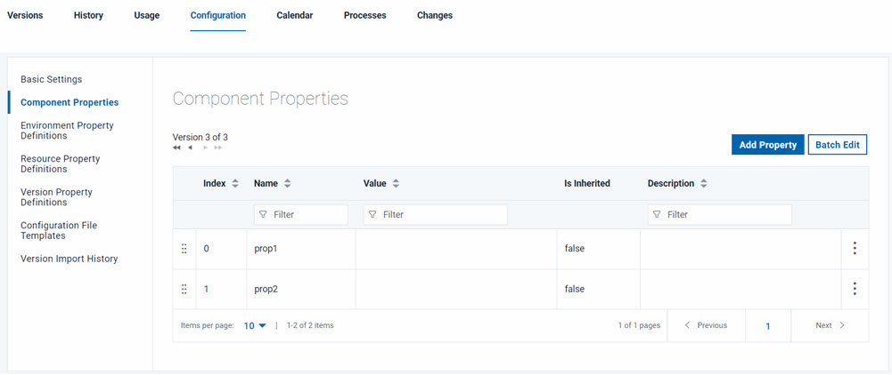
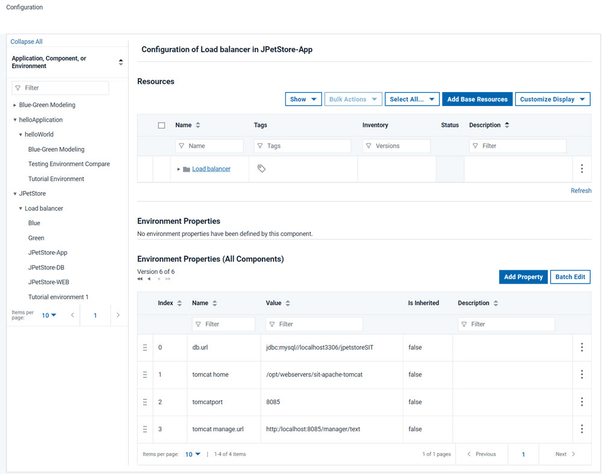
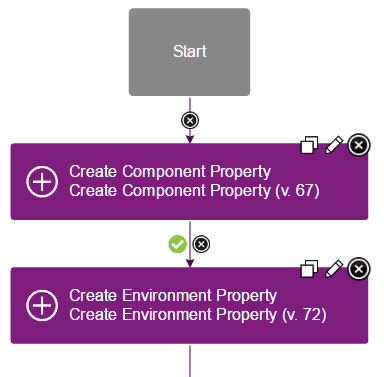

Creating, setting, and editing properties
Properties can be created for most elements, including components, resources, applications, and agents. You can set and change properties in many different ways.
About this task
Setting properties manually
You can create and edit properties on many elements by opening the element and going to its Configuration tab.
About this task
To edit most of the properties for an element, open the element, go to its Configuration tab (not the Configuration tab at the top of the page), and then click element_type Properties. For example, to edit component properties, click the component, click Configuration, and then click Component Properties, as shown in the figure.

However, if you created an application from a template, any environment or application properties that you specified are not available on the Configuration tabs. You can view and edit, but not delete, these properties by clicking the element's Configuration tab (not the Configuration tab at the top of the page), and then clicking Basic Settings.
Property1=Value1
Property2=Value2
Property3=Value3\, =, :) with a
backslash, for
example:WindowsPath=C\:\\myfolder\\myfile.txt
PropertyWithColons=This string\: has a colon\n". Be sure to click
Save to save your changes when you are finished editing multiple
properties. To close batch edit mode, use the Use Table command.
Secured values are encrypted when they are displayed in batch mode. If you modify an
encrypted value, the modifications are encrypted when you exit edit mode.Auto-completing properties
Starting in v7.0.5, auto-completing properties were added to the script editor fields. The auto-complete functionality works in application, component, and generic processes.
Setting properties with the Configuration tab
On the top-level Configuration page you can directly manage properties for applications, components, and environments.
About this task
Access the Configuration page by clicking the Configuration tab. From this page, you can add properties to applications, components, and environments.

Setting properties in processes
Several different steps are available to create and set properties in processes.
About this task

We need to provide more information about adding property. With an example, we can give context and meaning behind the controls on this page.